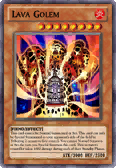
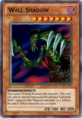
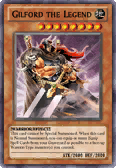
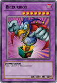
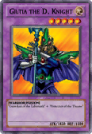
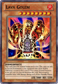
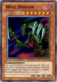
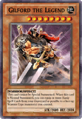
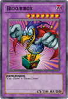
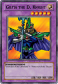

ZBTCB: The Card Album
Credits to the dedicated fans who collected all scans.
Using scans from Mamodo Battles where available.
Spells
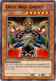
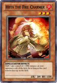
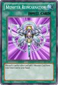
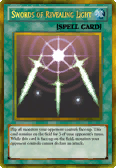
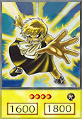
Kiminikonokoegatodokimasuyooni
"Let's go, Zatch!"
My other projects:
A personal fork of the Wii media player, with a focus on new functionality.